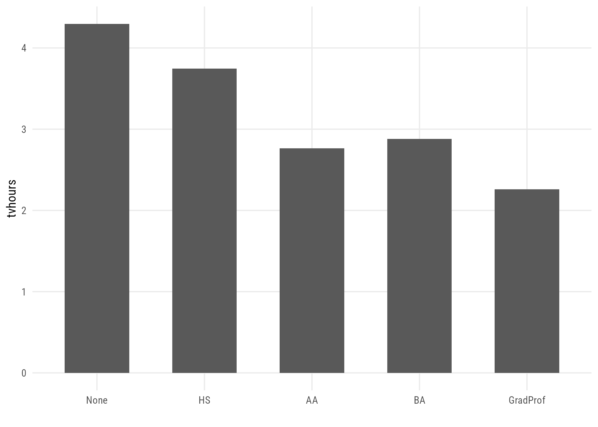
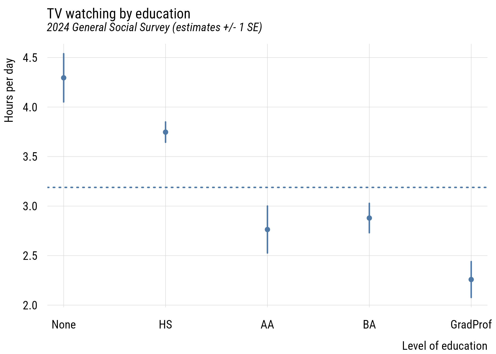
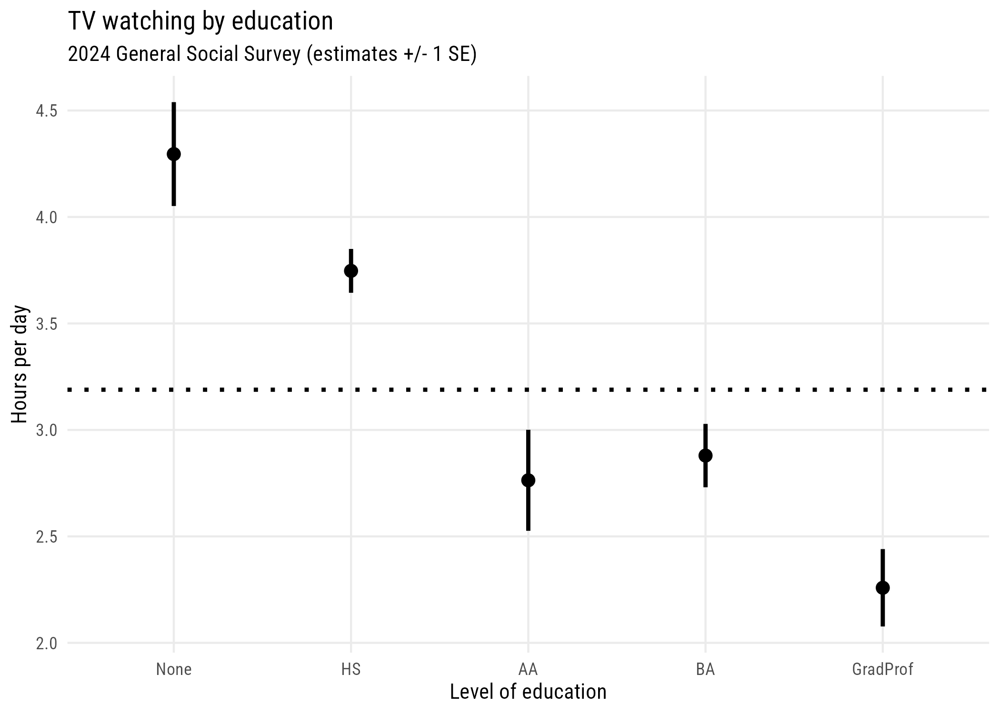
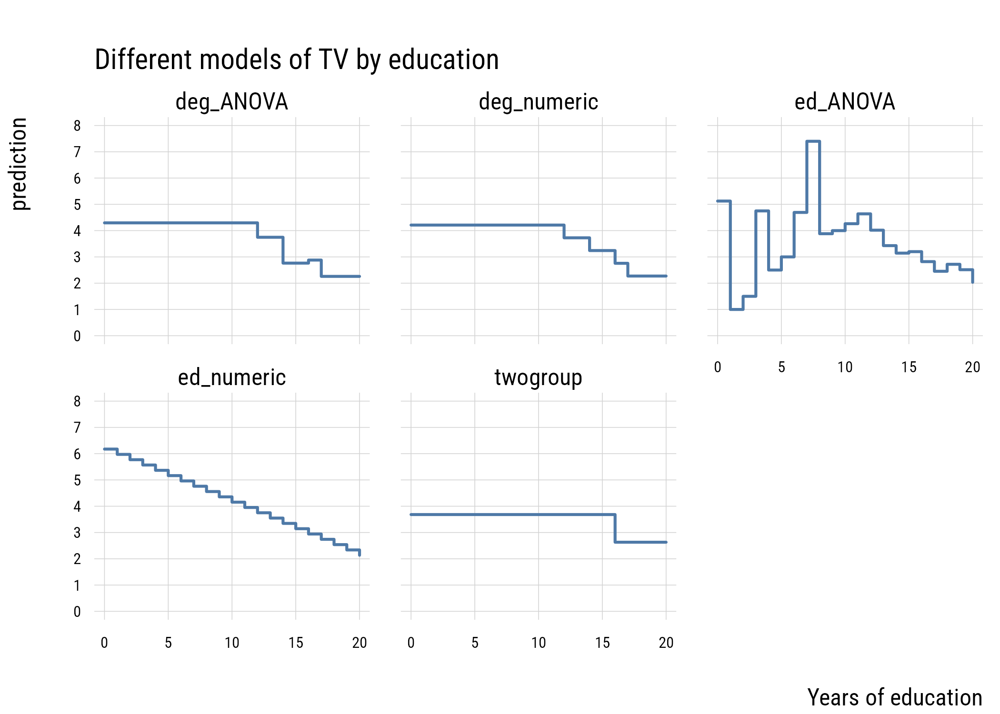
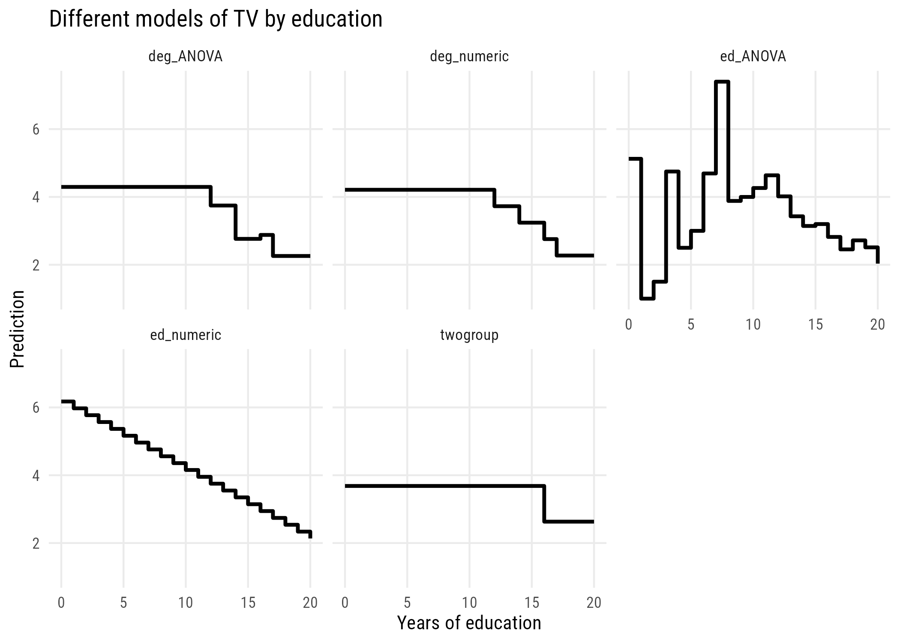

Part IV is about categories, and it does two rather different things.
The first three chapters keep a continuous outcome and make the predictors categorical: comparing groups, crossing two groupings, and reading contingency tables. Everything you know still applies: model C against model A, SSE, PRE, the F test.
The last two chapters change the outcome to something that is not continuous at all, such as a yes/no answer or a count. There the model’s shape has to change, and the additive error term we have carried since Chapter 4 will quietly disappear. We will flag that clearly when we get to it.
The goal of this chapter is to show you how to use categorical predictors in a sensible way.1
1 There is a strong pitch in the model comparison tradition (Correll et al. 2025) for the value of orthogonal contrast coding versus dummy coding. This is the opposite of our convention in sociology and I admit I simply can’t understand the idea that contrast coding is easier. It must be cultural differences! I did try for a while but the availability of post-hoc test calculation functions like car::linearHypothesis() and marginaleffects::hypotheses() seem to make contrast coding mostly irrelevant to my use cases. So this book uses dummy coding throughout. Appendix D shows one of the alternatives, so that a table coded that way is readable rather than baffling.
We will use the GSS data. Our outcome will be tvhours and we will use various transformations of education as the predictors.
The \(X = 0\) group is called the reference category or omitted category because its expected value is equal to \(\alpha\).
Many people would estimate this two-group comparison as a t-test. Here’s how you would do that in R.
t.test(tvhours ~ college,data = d,var.equal =TRUE) # assumes one sigma for both groups
Two Sample t-test
data: tvhours by college
t = 7.2193, df = 2138, p-value = 7.228e-13
alternative hypothesis: true difference in means between group 0 and group 1 is not equal to 0
95 percent confidence interval:
0.7666567 1.3385097
sample estimates:
mean in group 0 mean in group 1
3.682963 2.630380
You can see everything that is important is the same here between the two approaches.
One wrinkle here is that I had to set var.equal = TRUE here in order to make the lm() and the t.test() identical. That’s because the regression model only allows one \(\sigma\) (the SD of the residuals).
The default value of var.equal is FALSE, which allows the two groups to have different within-group standard deviations. This is often called a Welch’s t-test.
t.test(tvhours ~ college,data = d,var.equal =FALSE) # allows two different sigmas
Welch Two Sample t-test
data: tvhours by college
t = 7.8768, df = 2062.4, p-value = 5.385e-15
alternative hypothesis: true difference in means between group 0 and group 1 is not equal to 0
95 percent confidence interval:
0.7905181 1.3146484
sample estimates:
mean in group 0 mean in group 1
3.682963 2.630380
You can see why this might be better given that the two groups do seem to have different variances.
Generalized least squares fit by maximum likelihood
Model: tvhours ~ college
Data: d
AIC BIC logLik
11019.88 11042.55 -5505.939
Variance function:
Structure: Different standard deviations per stratum
Formula: ~1 | college_fac
Parameter estimates:
BA+ No BA
1.000000 1.412625
Coefficients:
Value Std.Error t-value p-value
(Intercept) 3.682963 0.09807663 37.55189 0
college -1.052583 0.13362748 -7.87700 0
Correlation:
(Intr)
college -0.734
Standardized residuals:
Min Q1 Med Q3 Max
-1.0316112 -0.6394203 -0.2472293 0.3656526 8.3809726
Residual standard error: 2.549778
Degrees of freedom: 2140 total; 2138 residual
This looks pretty much like lm() output except for the Variance function part at the top. This tells you that the residual SD of the non-college group is 1.412625 times the size of the college group (2.549778).
Putting this choice in a modeling context means that we can use all the tricks we normally use to decide if we need the more complicated model.
AIC(m1, m_welch)
df AIC
m1 3 11128.11
m_welch 4 11019.88
BIC(m1, m_welch)
df BIC
m1 3 11145.12
m_welch 4 11042.55
You can see here that both information criteria support the more complicated model with separate variances.2
2 We could also use a likelihood-ratio test here using anova(). But to do so, we’d need to reestimate the linear regression model using nlme::gls() where you just delete the weights line.
13.2 Give your dummies a meaningful zero
The college variable above was built to take the values 0 and 1. Here is what happens when a categorical variable arrives already stored as a number and you hand it straight to lm().
pol <-readRDS(here::here("data", "gss2024.rds")) |> haven::zap_labels() |>select(polviews, sex) |>drop_na()
Let’s start with the “bad way” of conditional predictions. This is bad because it doesn’t make sense to have sex be coded 1 and 2.
# A tibble: 2 x 5
term estimate std.error statistic p.value
<chr> <dbl> <dbl> <dbl> <dbl>
1 (Intercept) 4.38 0.0890 49.3 0
2 sex -0.178 0.0547 -3.26 0.00113
Here the intercept is 4.38, which is the expected value when sex == 0, which is meaningless when sex is coded 1 for male and 2 for female.
One good way to deal with this is to make a new variable with a meaningful zero. That means that the intercept is now the prediction for the “zero group” or reference category (which will be female respondents here).
pol <- pol |>mutate(male =if_else(sex ==1, 1, 0))model_a2 <-lm(polviews ~1+ male,data = pol)tidy(model_a2)
# A tibble: 2 x 5
term estimate std.error statistic p.value
<chr> <dbl> <dbl> <dbl> <dbl>
1 (Intercept) 4.03 0.0368 109. 0
2 male 0.178 0.0547 3.26 0.00113
Another way is using the factor() wrapper to force R to make a dummy variable. Here it chose 1 (male) as the reference category and 2 (female) as the “1” category. So the sign is different than when we manually chose above.
# A tibble: 2 x 5
term estimate std.error statistic p.value
<chr> <dbl> <dbl> <dbl> <dbl>
1 (Intercept) 4.20 0.0405 104. 0
2 factor(sex)2 -0.178 0.0547 -3.26 0.00113
The slope never moved. Only the intercept did, and only the version with a real zero puts a group mean there:
pol |>group_by(sex) |>summarize(mean_polviews =mean(polviews))
# A tibble: 2 x 2
sex mean_polviews
<dbl> <dbl>
1 1 4.20
2 2 4.03
TipMake factors on the way in
R constructs dummies automatically when you give it a factor, which is the reliable habit. The trap is a categorical variable that arrives already stored as a number, where nothing will warn you.
13.3 Multiple categories
We can extend the same idea to multiple groups. This is generally known as one-way ANOVA (“analysis of variance”) but we’re going to do this in the context of a regression model.
d |>group_by(degree_fac) |>summarize(tvhours =mean(tvhours)) |>ggplot(aes(x = degree_fac, y = tvhours)) +geom_col(width =0.6) +labs(x ="", y ="tvhours")

Figure 13.6: Mean hours of TV per day by degree.
One thing to watch out for is using a numeric variable. I have two versions of the degree variable: degree, which is numeric and degree_fac which is a factor variable. It’s easy to see if we make a frequency table.
13.3.0.1 Numeric version
d |>group_by(degree) |>summarize(n =n())
# A tibble: 5 x 2
degree n
<dbl> <int>
1 0 176
2 1 988
3 2 186
4 3 473
5 4 317
13.3.0.2 Factor version
d |>group_by(degree_fac) |>summarize(n =n())
# A tibble: 5 x 2
degree_fac n
<fct> <int>
1 None 176
2 HS 988
3 AA 186
4 BA 473
5 GradProf 317
We want to estimate a separate mean for each group so we want to use the factor version.
If we accidentally use the numeric version, we get this:
# A tibble: 2 x 5
term estimate std.error statistic p.value
<chr> <dbl> <dbl> <dbl> <dbl>
1 (Intercept) 4.21 0.126 33.4 2.97e-197
2 degree -0.485 0.0555 -8.74 4.43e- 18
This tells us that each additional degree predicts a -0.485 difference in tvhours. This treats degree as a continuous predictor, which is not how we implement a one-way ANOVA.3
3 As we’ll see below, this might actually be a reasonable model. But it’s not an ANOVA!
Here’s how we can estimate a linear model that is equivalent to a one-way ANOVA:
The intercept here is the expected value for those with no degree (the “reference category”). And each of the dummy variables indicate how different that category is from the reference.
Note that we could use any reference category we want. The reference value is \(\alpha\), which is always a point and is the expected value of the omitted (or reference) group. The \(\beta\) values are distances from that reference point to the mean of the relevant group. This is the same logic as two groups!
d |>mutate(degree_fac =relevel(degree_fac, ref ="GradProf")) |>lm(tvhours ~ degree_fac, data = _) |>coef() |>round(3)
WarningTwo ways R will pick a reference category you didn’t plan
With a <chr> variable, R will pick the alphabetically lowest value as the reference category. And if you build an ordered factor, R defaults to “polynomial contrasts” (.L means “linear,” .Q means “quadratic,” and so on), which you really don’t need to worry about here (the coefficients are not group differences at all). Either problem is fixed by building an unordered factor with the levels in the order you want, as we did with degree_fac.
13.3.1 Joint significance
One tricky thing with three or more groups is that we can’t look at a single beta coefficient to tell if the group differences are significantly different from zero. We can compare the fit of the null model to the fit of the fitted model. The null hypothesis here is that \(\beta_1 = \beta_2 = \beta_3 = \beta_4 = 0\) (or that all groups have the same mean).
m2_null <-lm(tvhours ~1, data = d)anova(m2_null, m2)
Analysis of Variance Table
Model 1: tvhours ~ 1
Model 2: tvhours ~ degree_fac
Res.Df RSS Df Sum of Sq F Pr(>F)
1 2139 23202
2 2135 22350 4 852.64 20.363 < 2.2e-16 ***
---
Signif. codes: 0 '***' 0.001 '**' 0.01 '*' 0.05 '.' 0.1 ' ' 1
This result will be exactly the same regardless of which category is chosen as the reference.
Tip
Don’t worry about the F-statistic or sum of squares here. This is for one-way ANOVA (analysis of variance). As we saw in Chapter 10, this type of comparison generalizes far beyond one type of model.
13.3.2 Plotting
In a case like this, regardless of how we code the predictors, plotting the estimated marginal means is probably the easiest thing to do visually.
plt(estimate ~ degree_fac,data = preds,type ="pointrange",ymax = ub,ymin = lb,lw =2,xlab ="Level of education",ylab ="Hours per day",main ="TV watching by education",sub ="2024 General Social Survey (estimates +/- 1 SE)")plt_add(type =type_hline(h = wgm),lw =2,lty =3)

Figure 13.7: TV watching by education, with the unweighted grand mean.
Show plot code
ggplot(preds, aes(x = degree_fac, y = estimate)) +geom_hline(yintercept = wgm, linetype ="dotted", linewidth =1) +geom_pointrange(aes(ymin = lb, ymax = ub), linewidth =1) +labs(x ="Level of education", y ="Hours per day",title ="TV watching by education",subtitle ="2024 General Social Survey (estimates +/- 1 SE)")

Figure 13.8: TV watching by education, with the unweighted grand mean.
This gives you a sense of how different the groups are from each other in a general sense.
13.3.3 Post-hoc tests
The main reason people seem to like orthogonal contrast coding is that it allows you to make the comparisons you want. For example, in the dummy coding results above, you can see that both BA and GradProf are significantly different from the reference category but not whether they are different from each other.
Rather than requiring us to set up such contrasts in advance, we can simply get them after the model is estimated using marginaleffects:
Hypothesis Estimate Std. Error z Pr(>|z|) S 2.5 %
degree_facGradProf=degree_facBA -0.621 0.235 -2.64 0.00821 6.9 -1.08
97.5 %
-0.161
This gives you the difference and standard error of the difference between these groups.
The catch is that it is now very easy to ask for all of them, and with five groups there are ten pairs. Here is what that costs, on data where every group is identical:
set.seed(522)one_experiment <-function(n =100, k =5) { y <-rnorm(n * k) # no real differences at all grp <-factor(rep(1:k, each = n)) unadjusted <-pairwise.t.test(y, grp, p.adjust.method ="none")$p.value adjusted <-pairwise.t.test(y, grp, p.adjust.method ="holm")$p.valuetibble(any_unadjusted =any(unadjusted <0.05, na.rm =TRUE),any_adjusted =any(adjusted <0.05, na.rm =TRUE),overall_F =anova(lm(y ~ grp))$`Pr(>F)`[1] <0.05 )}tibble(sid =1:2000) |>rowwise() |>mutate(out =list(one_experiment())) |>unnest_wider(out) |>ungroup() |>summarize(across(everything(), \(z) round(mean(z), 3))) |>select(-sid)
# A tibble: 1 x 3
any_unadjusted any_adjusted overall_F
<dbl> <dbl> <dbl>
1 0.292 0.044 0.048
Running all ten pairwise tests turns up at least one “significant” difference about 29% of the time. The overall F test misfires at just about its advertised 5%, and Holm’s adjustment brings the sweep back to roughly the same place. The deeper protection is deciding which comparisons you care about before you look, which is exactly what a single hypotheses() call written in advance amounts to.
13.4 Model comparison
So far on the right-hand-side (RHS) of our models, we have had indicators of (or dummy variables representing) two or five expectations related to discrete groups. Extending this to more groups is pretty easy. We might keep extending the logic of group comparison. degree, for example, has 5 distinct levels in the GSS. But why stop there? The educ variable has (up to) 21 levels!
In the spirit of what we’ve done so far, let’s think of how to compare these models. Consider several options for modeling educational differences on TV watching:
college vs. non-college
degree status as a continuous variable (the “accident” from above)
plt(prediction ~ educ,data = preds2_long,facet = model,type ="s",lw =2,yaxb =0:8,xlab ="Years of education",main ="Different models of TV by education")

Figure 13.11: Five models of TV watching by education.
Show plot code
ggplot(preds2_long, aes(x = educ, y = prediction)) +geom_step(linewidth =1) +facet_wrap(~ model) +labs(x ="Years of education", y ="Prediction",title ="Different models of TV by education")

Figure 13.12: Five models of TV watching by education.
These models differ in their level of complexity, their fit to the sample and their risk of overfitting the population data.
Let’s compare all these models using our old friends, AIC and BIC.
You can see that the most flexible model—the ANOVA that treats every distinct year of education as its own category—has the highest PRE but isn’t preferred by AIC or BIC. It’s a classic case of overfitting.
We can see exactly where it goes wrong:
table(d$educ)[1:8]
0 1 2 3 4 5 6 7
8 1 2 4 2 4 13 5
One respondent reports a single year of schooling. Two report two years. The factor model dutifully estimates a separate mean for each of those cells and carries that noise forward as though it were knowledge.
The model that “wins” here is the model that one might fit by accident—the one that treats degree as continuous. This assumes that only degree transitions matter and that every transition size is the same. This is clearly a simplification but it’s one that fits surprisingly well!
TipHow much structure should you impose?
Treating an ordered predictor as numeric imposes a straight line: each additional step is assumed to matter the same amount. Treating it as a factor assumes nothing about spacing or order, and pays for that freedom with a parameter per category.
Neither is automatically right, and the comparison above is how you decide. Here it retroactively justifies the shortcut we have been taking since Chapter 1, where treating ordinal variables as numeric was flagged as a judgment call and left unresolved.
13.5 Recap
a two-sample t-test is a regression with one dummy predictor, as long as you set var.equal = TRUE, because lm() allows only one \(\sigma\)
separate variances can be modeled with nlme::gls() and judged like any other model with AIC and BIC
dummy coding represents \(k\) groups with \(k-1\) indicator variables
the intercept is the reference category mean, and each coefficient is a distance from that point
zero has to mean something, because the intercept is the prediction at zero
make factors on the way in
the F test for the whole factor is what is traditionally called one-way ANOVA
comparisons not built into the coding can be recovered afterwards with marginaleffects::hypotheses()
more flexibility always raises \(R^2\) and does not always help
Correll, Josh, Abigail M. Folberg, Charles M. Judd, Gary H. McClelland, and Carey S. Ryan. 2025. Data Analysis: A Model Comparison Approach to Regression, ANOVA, and Beyond. Routledge.